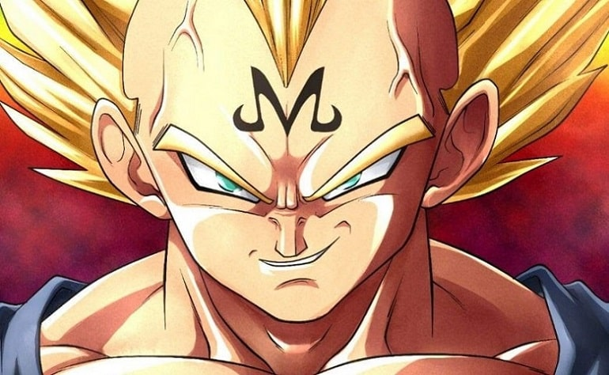

5 años han pasado desde la derrota de Cell. El mundo goza de una paz temporal, sin saber que un nuevo enemigo emergería pronto. Mientras tanto, se celebraba un nuevo torneo mundial de artes marciales. Todos, incluido Goku, quien había muerto en la pelea contra Cell, irían a ese torneo a medirse con los mejores, entre ellos Vegeta, quien esperaba con ansias su combate. Todo iba a producirse, pero de repente, en medio del combate de Gohan, este es sujetado y desprovisto de toda su energía. Goku y los demás persiguen a los malhechores, quien tras entregar la vasija con el poder de Gohan, mueren a manos de su jefe de manera despiadada. Es entonces cuando Goku, Vegeta y el recién recuperado Gohan se infiltran en la base del misterioso mago con objetivo de conocer y prevenir sus (más que posibles) malvados planes.
Dentro del recinto, los 3 se enfrentan a enemigos que no suponen una amenaza, salvo para Gohan. Él se enfrenta al Rey Demonio Dabra, el cual posee un poder ligeramente superior al del ya muerto Cell. Esto, junto con el hecho de que Gohan no ha entrenado asiduamente los últimos años, hace que la batalla se vuelva pareja, cayendo para el lado del joven Saiyan finalmente. No obstante, el malvado mago, llamado Babidi, tiene tiempo suficiente de resucitar al legendario Monstruo Buu, un antiguo enemigo de los Kaio de este universo, para que devore La Tierra. Notando, además, la maldad en el corazón de Vegeta, lo posee, despertando ese ansia de sangre que antaño había tenido, y sirviéndole como distracción al grupo, pues se propone zanjar de una vez por todas la continua disputa de poderes que tiene con su rival Kakarot (Goku).
Vegeta fuerza a Goku a pelear, asesinando inocentes por cada vez que este se niega a pelear con él, en vistas de que hay un enemigo mayor y más preocupante, pero finalmente cede ante la petición de su rival, y se enzarzan en una pelea bestial, ambos usando la forma de Super Saiyan 2 al máximo poder, en la que es una de las mejores peleas de toda la franquicia. Sin embargo, se ve interrumpida por el inmenso poder del Monstruo Buu, el cual ambos sienten, y se ponen de acuerdo para ir a detenerlo. O al menos, así había sido originalmente, pues Vegeta aprovechó un despiste de Goku para noquearlo y enfrentarse él solo a tan temible oponente, buscando redimirse de sus recientes acciones. Pero el poder del Monstruo era demasiado, incluso para Vegeta. Es en ese momento cuando, después de abrazar a su hijo, decide dar la vida para acabar con el enemigo, estallando su cuerpo como si de una bomba nuclear se tratase, con el fin de protegerlos a todos.
Desgraciadamente, el Monstruo Buu se recompone célula a célula y no se ve afectado en lo más mínimo por dicha explosión. Goku despierta y se acerca al lugar, alcanza la legendaria transformación del Super Saiyan 3 y lo confronta, pero debido a que estaba muerto, tal desgaste de energía acortó su ya reducido tiempo en La Tierra, y tuvo que volver al Más Allá. En este lugar, se encontraría sorpresivamente con Gohan, su hijo, quien había sido entrenados por los Kaioshin para alcanzar un estado místico, y conseguir el poder suficiente para enfrentar al Monstruo Buu. Llega a La Tierra cambiado, con una expresión seria en el rostro, y después de propinarle una paliza brutal al enemigo, se descuida, siendo absorbido por Buu y fusionando sus poderes. Dicho enemigo no está al alcance de ningún mortal.
Ante la ardua situación, los Kaioshin del Más Allá recuperan el cuerpo de Vegeta y lo envían junto con Goku a la Tierra, para plantarle cara a tan temible oponente y evitar una destrucción inimaginable. En ese momento, Goku le da a Vegeta uno de los pendiente Pothara, que permitirían fusionar a ambos luchadores en un solo ser perfecto y muchísimo más fuerte. Tras realizar la fusión, el nuevo guerrero, conocido como Vegetto, supera abismalmente al Monstruo Buu, quien en un último intento por sobrevivir, lo termina absorbiendo.
Sin embargo, Vegetto es tan poderoso que se mantiene consciente dentro de Buu, aunque pierde la fusión. Vegeta y Goku, dentro de él, rescatan a las personas que había absorbido anteriormente y priva a Buu de todo su poder. El nuevo enemigo, conocido como "Kid Buu" o "Pequeño Buu" no era ni una sombra del poder que había llegado a tener, pero en un descuido, destruye La Tierra. Ante esta situación, Goku se teletransporta junto con sus amigos al Más Allá, lugar hasta donde Kid Buu los seguiría. Ahí, con ayuda de todas las almas de las personas de La Tierra, Goku canaliza su ataque final, una Bomba de Energía del tamaño de un planeta, y se la lanza a Kid Buu, quien no tiene ninguna opción de esquivarla y lo termina desintegrando.
Y así, tras resucitar y restaurar La Tierra con las Dragon Ball de Namek, el universo sobrevive a la mayor amenaza que había visto nunca. Todos los Guerreros Z vuelven a La Tierra, donde por fín pueden disfrutar de una paz verdadera. Al menos, por el momento...
Akira Toriyama hablando de cómo su Manga Dragon Ball Z impactó en la cultura popular